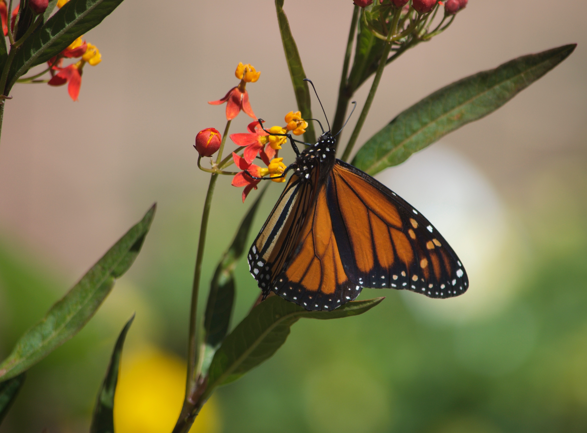
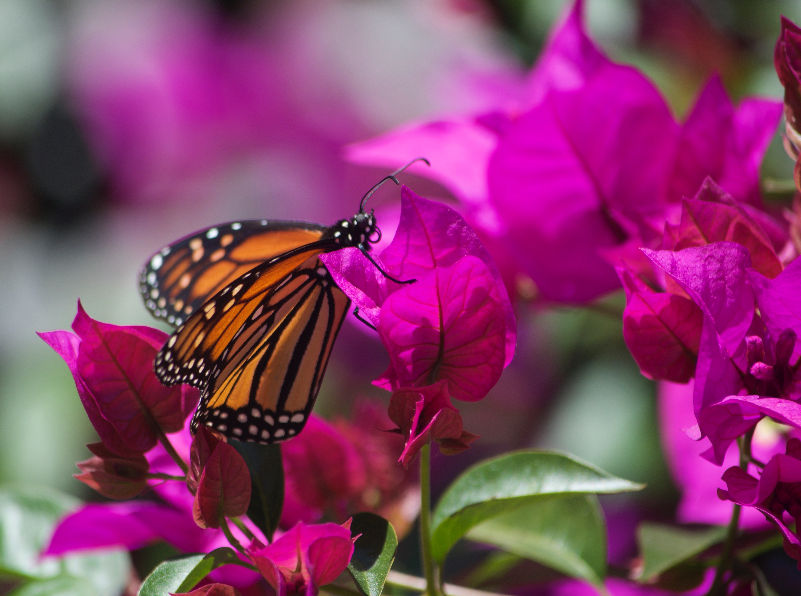
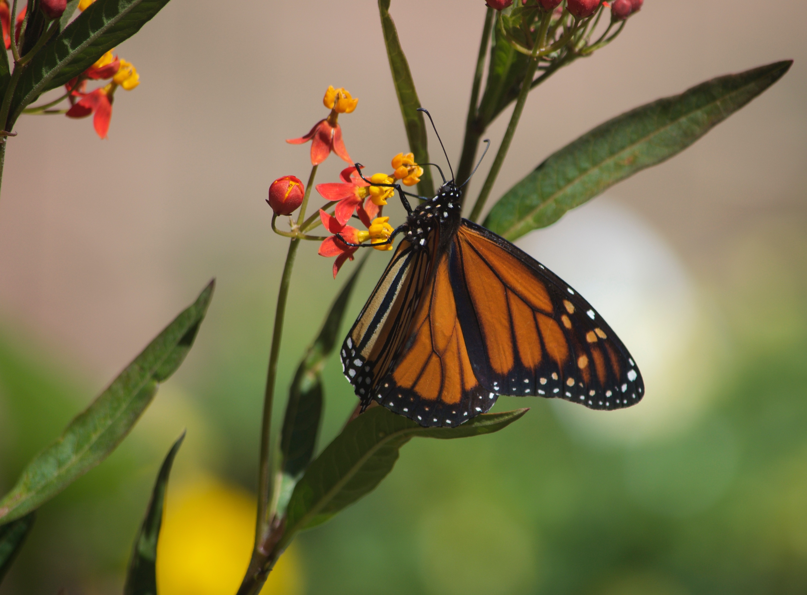
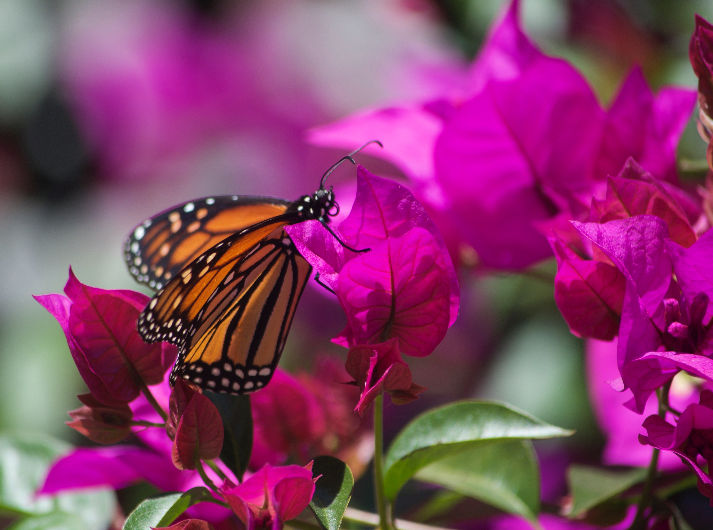

The Milkweed Highway
The Milkweed Highway/the “Highway” is a visual, on-line concept, but it will be made up of very real Milkweed plants that will feed and nurture vast numbers of butterflies. (These need not be planted right next to an actual highway!)
It is now well known that Monarch butterflies are in a dramatic and steep decline in numbers. Monarchs are totally reliant on plants of the Asclepias (Milkweeds) genus, because they lay their eggs on the leaves of these plants, and the caterpillars can feed and grow only on this one species. If there are no Milkweeds for the caterpillars, there will be no new generation of Monarchs.
Milkweeds are complete-flowered and their pollen only sheds in clumps of sticky pollen; they are normally pollinated by bees and butterflies. As such they pose very little risk of pollen-allergy, and can be considered to be allergy-friendly garden plants. Milkweed sap is mildly poisonous, but does not taste good, and there appear to be few, if any, documented health problems from the sap or from eating the leaves or flowers.
There are many different species of Asclepias throughout North, South and Central America, all of them perennials. Asclepias is a genus native to the Americas, and not to other parts of the world. In the past large numbers of wild Milkweeds grew in fields that have now been converted to pastures for cattle, sheep or goats. In addition, in past years wild Milkweeds often grew along the fence lines of cultivated fields, and these served as host plants for butterflies. However with greatly increased use of the herbicide Roundup, and with greatly increased spraying of the “weeds” growing under and next to fence lines, wild Milkweed plants are now becoming more and rarer. Mowing of wild plants alongside highways has also contributed to the decline of the numbers of Milkweeds.
As the wild Milkweed plants disappear, so do the species of butterflies that depend on them, in particular the Monarchs, because they cannot exist without them.
There is considerable valid concern that when people plant Milkweeds to host Monarchs, that they should be using only native species of Asclepias, so that the butterflies do not stop and linger on their migrations south and lay eggs on plants that will then get frosted and killed. Most of the Milkweed plants being sold in nurseries now are Tropical or Mexican Milkweed, Asclepias curassavica. This is an attractive and easy to grow species but it is not appropriate for large areas within the Monarch migration. In Western coastal areas where Monarchs overwinter and breed, A. curassavica can be a useful plant, but even in these areas it would be wise to also plant species that are native. The native Milkweed species of the West are all extremely drought tolerant, and are also hosts for other important pollinators.
It is the aim of The Milkweed Highway to encourage large numbers of people in the US and Canada to plant and maintain new native Milkweed plants. Initially the focus of the Highway will be to run across the southern US, from West to East. As the Highway grows in popularity, it will also start to crisscross more northern areas within the Monarch migration routes. There are many individuals who can plant a half a dozen or more Milkweed plants; likewise there are numerous civic groups, churches, schools, clubs, and other environmental groups that could plant even larger numbers. If done right, the more Milkweeds we plant, the more the butterflies will have to feed and grow on.
The overall, over-reaching main goal of SAFE Gardening is to encourage the creation of landscapes that are healthy for humans, for wildlife, and that are sustainable, balanced and environmentally sound. In the past little if any attention was paid to how allergenic or not city plantings were, and as a result we now have large areas of urban forests and landscapes that are highly allergenic and that trigger allergies, asthma and other serious health concerns.
Milkweed plants are rich sources of nectar and are visited by many valuable native pollinators, including numerous species of butterflies. The Monarch butterflies are not the only species that is totally reliant on Milkweeds; there is a group of butterflies known as “Milkweed Butterflies” and all of these depend on these plants.
 


